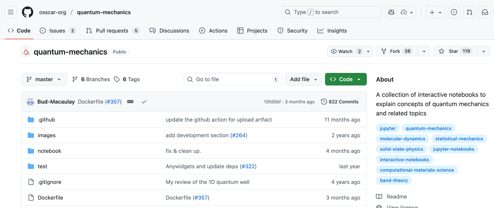

Part 0. Review of Week 1#
As a quick review of what we covered in Week 1, we will briefly go over the most important aspects.
0.0 Working environment#
First, let’s make sure we all have our working environment organised and set up correctly.
I strongly suggest you to create a folder in your computer where you will keep all the material related to this course. You can call it pyqm or any other name you prefer. Inside this folder, you can create subfolders for each week or topic, where you will store the exercises, notebooks, and any other files related to that week or topic.
You can open it in your file explorer system; or even better, by the terminal prompt.
Let’s call that folder pyqm, and navigate to it using the cd command. For example, if you created a folder called pyqm in your home directory, you can navigate to it by typing:
cd /Users/your_username/path/to/folder/
mkdir pyqm # run this command if you haven't created the folder yet
cd pyqm # run this command to navigate to the folder
pwd # this command will print out the current directory you are in
In that folder we might want to have the GitHub repository we created for this course, so we can keep track of our progress and share our work with others.
If it was created somewhere else, you can always move it to the pyqm folder using the mv command. For example:
mv /path/to/my-repo /path/to/folder/pyqm/.
Move command syntax: mv <source> <destination>. The dot at the end means “move to this directory”. Note that this command is also used to rename files and directories.
Warning
Be careful when using the mv command, as it will overwrite files and directories without warning if they already exist in the destination. Always double-check the source and destination paths before executing the command.
In that folder we will be working throughout the course. If you have the materials from last week, you can move them there as well. Otherwise, you can always download them again from Blackboard. Additionally, you can move there your exercises from last week. We would like to have everything in one place.
0.1 Python and Conda recap#
To test if you have Python and Conda installed, you can run the following commands in your terminal or command prompt:
python --version
conda --version
Now we will test if you your environment is set up correctly. You can do this by listing all the Conda environments you have on your machine:
conda env list
We will try to open a Jupyter Notebook in the folder you have your exercises from last week. You can do this by running the following command in your terminal or command prompt:
jupyter notebook
Could you? Did you remeber to activate your environment first?
Reminder on how to activate your environment:
conda activate pyqm
Now, can you check your Python version now? Is it the same as before? What is the difference?
0.2 Git and GitHub recap#
Git can feel a bit overwhelming at first, but it’s a powerful tool for version control. Let’s go trough the basic commands again and check if you created your GitHub repository for this course successfully. Rembember to check that you have created the repo locally on the file system of your laptop, and remotely on GitHub.
To check if git is configured correctly, you can run the following commands in your terminal or command prompt:
git --version
git config --list
Check that your name and email are correct. If not, you can set them using:
git config --global user.name "Your Name"
git config --global user.email "your_email@example.com"
You will also see a list of other configurations, including the url of your remote repository if you have set one up. remote.origin.url.
These are the basic Git commands we will be using throughout the course:
git init: Initialize a new Git repositorygit clone <repository_url>: Clone an existing repositorygit status: Check the status of your repositorygit add <file_name>: Stage changes for the next commitgit commit -m "commit message": Commit staged changes with a messagegit push: Push committed changes to a remote repositorygit pull: Pull changes from a remote repository
Git clone#
Since last week we didn’t get to practice cloning a repository, and that could be important for your work, let’s try to clone a repository. By cloning a repository, you will create a local copy of the code and files available online, which allows you to explore and modify them on your own machine.
For instance, this could be an interesting repository to clone and explore: Interactive Notebooks: Quantum Mechanics and Computational Materials Science
As you can see in the top right corner, there is a green button that says “Code”. If you click on it, you will see a URL that you can use to clone the repository.

You can clone it using git clone <repository_url> command. Just make sure to navigate to the folder where you want to clone the repository before running the command. You can use the cd command to change directories.
In our folder called pyqm where you have everything related to the course, you can navigate typing in the terminal:
cd path/to/your/folder/pyqm
git clone https://github.com/osscar-org/quantum-mechanics.git
It downloads a copy of the repository to your local machine. You can then navigate to the cloned repository using the cd and ls command:
cd quantum-mechanics
ls
You should see a list of files and directories that are part of the repository. You can now explore the code, make changes, and even contribute back to the original repository if you want.
0.3 Python basics recap: Variables, Data types and Basic Operations#
You can go back to the materials from last week if you need to refresh your memory on these topics. Week 1 - Python basics
0.3.1 Variables and Data Types#
In Python, variables are used to store data. You can create a variable by simply assigning a value to it using the = operator.
Python has several built-in data types, including:
Text Type: strings,
strNumeric Types: they can be either integer, float, or complex (
int(),float(),complex())Sequence Types: list, tuple, range (
list(),tuple(),range())Mapping Type: dict (
dict())Set Types: set (
set())Boolean Type: bool (
bool())Binary Types: bytes, bytearray (
bytes(),bytearray())None Type: NoneType (
None)
0.3.2 Basic Operations#
Basic arithmetic operations can be performed using standard operators. Here are some examples: Here’s a list of some common operations you can perform with different data types:
Addition:
+Subtraction:
-Multiplication:
*Division:
/Floor Division:
//Modulus:
%Exponentiation:
**
But we can also perfom comparison operations:
Equal to:
==Not equal to:
!=Greater than:
>Less than:
<Greater than or equal to:
>=Less than or equal to:
<=
And logical operations:
And:
andOr:
orNot:
not
0.3.3 Strings#
Strings are sequences of characters enclosed in single or double quotes. You can perform various operations on strings, such as concatenation, slicing, and formatting.
Operations on strings include:
Concatenation:
+Repetition:
*Slicing:
string[start:end:step]Formatting:
f"Hello, {name}!"Length:
len(string)Methods:
string.lower(),string.upper(),string.split(),string.join(), etc.Indexing:
string[index]to access individual characters
0.3.4 Lists#
Lists are ordered collections of items that can be of different data types. You can create a list by enclosing items in square brackets []. Lists are mutable, meaning you can change their content after creation.
Operations on lists include:
Accessing elements:
list[index]Slicing:
list[start:end:step]Adding elements:
list.append(item),list.insert(index, item),list.extend(other_list)Removing elements:
list.remove(item),list.pop(index)Length:
len(list)Methods:
list.sort(),list.reverse(),list.index(item),list.count(item), etc.
0.3.5 Tuples#
Tuples are similar to lists, but they are immutable, meaning their content cannot be changed after creation. You can create a tuple by enclosing items in parentheses ().
Operations on tuples include:
Accessing elements:
tuple[index]Slicing:
tuple[start:end:step]Length:
len(tuple)Methods:
tuple.index(item),tuple.count(item), etc.Packing and Unpacking: You can pack multiple values into a tuple and unpack them into individual variables.
Example:
a, b = (1, 2)assigns1toaand2tob.
0.3.6 Sets#
Sets are unordered collections of unique items. You can create a set by enclosing items in curly braces {} or by using the set() function. Sets are useful for performing mathematical set operations like union, intersection, and difference.
Operations on sets include:
Adding elements:
set.add(item)Removing elements:
set.remove(item),set.discard(item),set.pop()Set operations:
set1.union(set2),set1.intersection(set2),set1.difference(set2),set1.symmetric_difference(set2)Membership testing:
item in set
0.3.7 Dictionaries#
Dictionaries are collections of key-value pairs. You can create a dictionary by enclosing key-value pairs in curly braces {} with a colon : separating keys and values. Dictionaries are mutable and allow for fast lookups based on keys.
Operations on dictionaries include:
Accessing values:
dict[key]Adding or updating key-value pairs:
dict[key] = valueRemoving key-value pairs:
del dict[key],dict.pop(key)Methods:
dict.keys(),dict.values(),dict.items(),dict.get(key), etc.Length:
len(dict)
Warning
Remeber that Python starts counting and indexing at 0. Take into account that the first element of a list, tuple, or string is accessed using index 0.
Example:
my_list = [10, 20, 30, 40, 50]
print(my_list[0]) # Output: 10
print(my_list[1]) # Output: 20
print(my_list[-1]) # Output: 50 (last element)
range(5) # Generates numbers from 0 to 4
Extra : Bash commands#
Here are some basic bash commands that might be useful when working in the terminal:
ls: List files and directories in the current directoryls -l: List files and directories in long format, showing permissions, ownership, size, and modification datels -a: List all files and directories, including hidden onesls -lrt: List files and directories sorted by modification time, with the most recently modified files firstls -lh: List files and directories in long format with human-readable file sizes
cd <directory_name>: Change the current directory to the specified directorycd ..: Move up one directory levelcd ../..: Move up two directory levelscd ../../..: Move up three directory levels, etc.cd ~: Move to the home directory
cat <file_name>: Print the content of a filecat | wc -l <file_name>: Print number of lines in a file
pwd: Print the current working directorymkdir <directory_name>: Create a new directory with the specified namerm <file_name>: Remove the specified filerm -r <directory_name>: Remove the specified directory and its contents recursivelycp <source> <destination>: Copy a file or directory from source to destinationmv <source> <destination>: Move or rename a file or directory from source to destinationdu -sh <directory_name>: Display the total size of the specified directory in a human-readable format
Warning
Be very careful when using the rm command, especially with the -r option, as it will permanently delete files and directories without moving them to a trash or recycle bin.
Note about path:
In bash, you can use both absolute and relative paths to specify file and directory locations. An absolute path starts from the root directory (e.g., /home/user/documents), while a relative path is based on the current working directory (e.g., documents/).
A relative path can also include .. to move up one directory level (e.g., ../pictures to access the pictures directory from the documents directory).
Try to open a terminal and navigate to the folder where you have your exercises from last week. You can use the ls command to list the files and directories in the current directory, and the cd command to change directories.
Extra : VIM editor#
Vim is a powerful text editor that can be used in the terminal. Here are some basic commands to help you get started with Vim:
Basic Vim commands:
Typing in the terminal:
vim <file_name>will open the specified file in Vim (terminal)Once in Vim, press the following:
i: Enter insert mode to start editing the fileEsc: Exit insert mode and return to normal mode:w: Save the file:q: Quit Vim:wq: Save the file and quit Vim:q!: Quit Vim without saving changes
Short VIM cheat sheet Large VIM cheat sheet
Try to open a terminal and create a new file using Vim. You can use the vim <file_name> command to create and open a new file. Then, try to edit the file, save it, and quit Vim using the commands above. Then, you can use the ls command to check if the file was created successfully. If you want to keep practicing with Git, you can also try to stage and commit the new file using Git commands to push it to your GitHub repository.
Would you remember how to do it? If not, you can always go back to the Git section above.
Hopefully this was a useful recap! If you have any questions or need further clarification on any of the topics covered, feel free to ask.